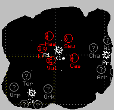

The worst that can happen is that he'll give you an answer, write it down for everyone else's benefit, and publicly thank you. What do you have to lose?
If they used the F key to distress then you will get a sector number and a planet in their message. The first number in the sector is an x coordinate, the second is a y coordinate. Sectors are numbered from 1 to 6 in a left-to-right or top-to-bottom order. If you have "Draw galactic map grid" enabled in your Options window, you should be able to locate the person quickly using this method.
Once you have the grid you should be able to locate their ship position indicators (`K3', `Ra'). This assumes they aren't under a dogpile. You can still warp to that sector and impulse to them.
For a planet? Not trivial, but fairly easy.
Use `P' to bring up the planet list window. Search for the name of the planet alphabetically and then look at its entry in the sctr column. This is the sector the planet is in. Remember that planets on the galactic have the `Planet' or `New' prefix removed.
Press `B' until you get some planet bitmaps on your
galactic that look like this:

Anything with a little man on the left has extra armies
which you can beam up and use to beat up on enemy planets.
Actually, you can beam one extra army off after the man
disappears, but that's an advanced tactic.
Here's my (Editor: Brazilian's ?) keymap. I don't claim it's the best, but it works for me.
# completely remaps the asdf area # # cloak beamup maximp plasma switchspec warwin # shield course phaser torp afterburners dock # halfimp beamdn bomb detmine pressor refit # ---------------- det --------------------------------------- # keymap: qcwze%rftCywauskdpftg`Hez#xxcbvDbynr d # new mouse bindings, left-to-right # tractor-on T/P-off pressor-on buttonmap: 1_2$3^
They could also be using missiles as indicators, since they are homing on normal servers.
macro.f.T: $tapUn %?2=$tapA%{AGRI%! %} %2%{near $tasn in $tap@%!is targeT%}
macro.y.T: $thui is going to die
macro.Y.T: $thui is crippled near $tapn, get him if you can.
macro.h.T: Somebody kill $thui near $tapn NOW
Crush, kill, destroy!
Seriously, bombing and taking planets are fairly important. If you just play hard, you should get enough rank to fly bases in a few weeks. Any rank beyond that is scumming territory and you'd have to read the rank system document (Editor: which hasn't been written yet) to figure out what you're missing.
A utility ship is a very lightweight base. It can carry armies without having to get kills, but can not orbit planets. It can refuel ships that are docked to it. PTs can enter the game docked to the UT (for a finite number of times, then the UT needs to refit).
On servers where carriers (CV) are allowed, you can beam
up armies and deploy 8 fighters for each army (max. 8 at
once) as a replacement for torps. Those fighters are
server controled in that they seek out the nearest (to
mouse or own ship ?) enemy ship and deliver a single torp.
Those torps are well aimed, but the fighters don't possess
great maneuveribility. They are most useful on long ranged
targets.
It's hard to defend against fighters, but it's possible:
either you det a lot (but eventually you die), or you have
to hit the small fighters with a phaser. Whenever a unit
of 8 is incomplete, the CV loses an army.